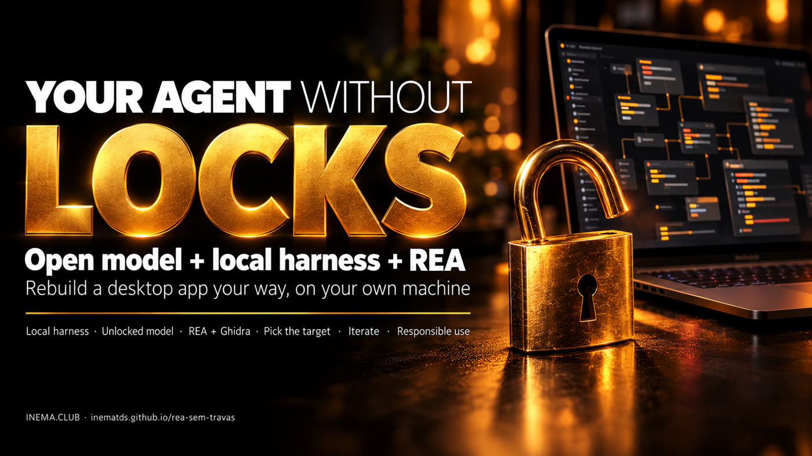

An open model that doesn't refuse legitimate reverse engineering, the dsh harness running locally, and REA connecting to Ghidra. Point it at an app and ask it to make your version.

This is a guide to recreating a computer program your way using three open components: a local agent harness (the dsh, DeepSeek's coding agent), an "unlocked" open model running in Ollama, and REA, which gives the agent reverse engineering tools such as Ghidra. It's for programmers and students who want to understand how an app works and make their own version, without relying on cloud models that sometimes refuse the request. Everything runs on your machine: you need Docker, Ollama, Node 22, and enough memory for a 14 to 24 GB model. Expect to get about 80% of the app, not the final stretch.
The model is the brain, the harness is the body with the tools, and REA is the eyes that see inside the compiled app.
The workbench where the agent lives: it reads and writes files, runs commands, and calls MCP tools. Here it runs in a container, only at the local address, and lets you switch models.
An "abliterated" version of an open model: its refusal reflex has been removed. It runs in Ollama on your machine, with no API key and nothing sent outside.
REA (Reverse Engineer Anything) is an MCP server and command line tool that provide the agent with app analysis: modules, functions, connections, with evidence and limits.
The agent doesn’t need to be brilliant: REA already organizes the tools, and the model just executes. That’s why a mid-sized open model can handle much of the work.
The Mac video player (QuickTime) offers only a few fixed speeds. The agent studied the app and created a new one, with a different name ("Tempo") and icon, granular speed control, audio waveforms, and pitch adjustment. About 80% was done in a single request; the rest was sources, visuals, and export.
Only what actually exists on the Ollama page on 12/10/2026 (the "tags" tab for each model). None were downloaded or measured on this machine: the disk was at 98%. Choose based on what fits in your memory.
| Model (exact command) | Size | Features on the page | Notes |
|---|---|---|---|
ollama pull huihui_ai/Qwen3.8-abliterated:27b | 18 GB (q4_K_M) | tools · thinking · vision | Same base as qwen3.8:27b, which already runs in dsh here. First choice. not measured |
ollama pull huihui_ai/Qwen3.6-abliterated:35b-a3b | 24 GB | tools · thinking · vision | MoE (3B active per token): tends to be fast. not measured |
ollama pull huihui_ai/glm-4.7-flash-abliterated | 19 GB | tools · thinking | GLM family, same as in the video example (that one was a larger cloud version). not measured |
ollama pull huihui_ai/gpt-oss-abliterated:20b | 14 GB | tools · thinking | The smallest on the list with tools. Good for a 32 GB machine. not measured |
ollama pull huihui_ai/qwen3-coder-abliterated:30b | 19 GB | no "tools" tag on the page | Focused on code, but check the tools tag: without tool calling, the agent won’t use REA. not measured |
./dsh remoto mode) that host unrestricted models, with US$ 5 to 10 in credit. Then the app code leaves your machine, and in remote mode dsh deliberately doesn’t mount ~/projetos.Tested as a reference on an ARM Linux machine (DGX GB10, 128 GB unified memory). On another machine, the commands are the same; the sizes that fit will vary.
dsh (@deepseek-ai/dsh 0.1.1-rc.1) in a node:22-slim container, 3 GB limit, non-root user, only on 127.0.0.1:9080.
cd ~/projetos/dsh-sandbox ./dsh status # mode, container, http, providers
Port 11434, 32K context and q8_0 KV cache in the service. Check what’s already installed and the disk space before pulling a model.
ollama list df -h / # the model needs 14 to 24 GB free
REA requires Node 22.19+, 24.11+ or 26+. The dsh container already includes 22.23.
docker run --rm node:22-slim node -v # v22.23.x
For compiled apps (C, C++, Swift, Rust). On Linux ARM64, the native decompiler may need to be compiled separately. This machine has only JDK 8, so this path is not measured. Electron/JavaScript apps don’t need Ghidra.
java -version # needs to be 21 or newer
The full prompts to copy and paste are in the repository’s prompts/ folder (in Portuguese).
local mode mounts ~/projetos at /projetos and leaves Ollama as the only provider: nothing leaves the machine. Open the dashboard and choose the workspace.
cd ~/projetos/dsh-sandbox ./dsh local # ~20 s; then open http://127.0.0.1:9080 ./dsh status # should show: local mode, /projetos mounted YES, providers: ollama # from another machine: ssh -L 9080:127.0.0.1:9080 usuario@servidor
Download one from the table above. Then add the model to settings.local.yaml (not to work/.dsh/settings.yaml, which is overwritten each time the mode changes), under llm-pi-ai → providers → ollama → models. The id must match ollama list character for character.
ollama pull huihui_ai/Qwen3.8-abliterated:27b ollama list | grep abliterated
# settings.local.yaml — add to the ollama provider's models list - id: huihui_ai/Qwen3.8-abliterated:27b name: Qwen3.8 27B unrestricted contextWindow: 32768 maxTokens: 8192 reasoningEfforts: off: none # explicit "none": empty leaves reasoning ON in Ollama low: low high: high max: high
./dsh local # copies settings.local.yaml to the container (no rebuild)
The new model appears in the dashboard selector. The provider's compat block (supportsDeveloperRole: false, maxTokensField: max_tokens) is already in the file and is required for Ollama.
Path A — Electron/JavaScript app, no Ghidra. The agent runs REA from the command line inside the container. This was the path measured here: REA 6.3.0 analyzed a 97-file Node app in 20 s; REA 6.4.0 analyzed an Electron app with 202 JS files in 94.5 s (1.26 GB peak). Put the target in a folder the container can see (~/projetos/dsh-sandbox/work/alvos becomes /work/alvos) and paste the prompt:
Install this and help me reverse engineer an app: https://github.com/morluto/rea
Use npx -y rea-agents@6.4.0, always preceded by "timeout -k 10 600".
Analyze /work/alvos/<app>.asar with analyze-javascript-application --json,
summarize modules, screens, and where <the function I’m interested in> is, with evidence.
Path B — REA as MCP inside dsh (not measured). Automatic registration with rea setup --client dsh is not in the published package yet (REA docs say "only on main, after 6.4.0"). The manual approach: install REA in its own folder under work/ (without touching dsh's frozen node_modules) and register the server in dsh home’s cordis.patch.yml.
cd ~/projetos/dsh-sandbox docker run --rm -u 1000:1000 -v "$PWD/work:/work" -w /work \ -e HOME=/work -e NPM_CONFIG_CACHE=/work/.npm --memory=6g \ node:22-slim npm install --prefix /work/rea rea-agents@6.4.0
# ~/projetos/dsh-sandbox/work/.dsh/cordis.patch.yml (inside container: /work/.dsh/cordis.patch.yml) - insert: - id: rea-mcp name: "@deepseek-ai/dsh-mcp-client" config: serverName: rea transport: stdio command: /usr/local/bin/node args: ["/work/rea/node_modules/rea-agents/scripts/rea.mjs", mcp] toolCallTimeoutMs: 600000 # default is 60 s; an analysis takes longer
Restart with ./dsh local; the tools appear as mcp__rea__…. For native binaries, REA needs Ghidra 12.1.x and JDK 21 visible from inside the container (GHIDRA_INSTALL_DIR, JAVA_HOME) and more memory than the container’s 3 GB. This was not set up or measured here.
Start with a small app that you use and miss just one thing in. Ask for a new app, with your own name and icon, written from scratch, and with a list at the end of what was left out.
Based on the analysis, create a NEW app, with its own name and icon (no name, icon,
text, or code from the manufacturer), that does what <original app> does in <main function>
and add: playback speed from 0.1x to 4x, in steps of 0.05.
Write the code from scratch in /work/minha-versao. First, make the smallest working version;
at the end, list what was left out and what needs manual testing.
The first version usually works for the essentials. The rest is tuning: appearance, export, small errors. One request at a time, testing between each one.
I opened version 1. What didn’t work: <what you saw, with the error message>.
Fix only that, run it again, and tell me how to confirm it’s right.
Stop. Summarize in 5 lines what you’ve tried, what errored, and what the hypothesis is. Don’t run anything else until I respond. # when the agent gets stuck
Check each item. If any fail, go to "Troubleshooting".
./dsh status shows local mode, http 200, and /projetos mounted.ollama list shows the unrestricted model with the same name as the id in the YAML.ls /work (proof that it calls tools).npx -y rea-agents@6.4.0 --help runs from inside the agent.Cases that have already come up on this machine or are described in the REA and dsh documentation.
REA 6.3.0 got stuck on an app with one huge JS file and ignored SIGTERM: the orphan had to be killed by PID. In 6.4.0, the same app finished. Even so, always run with a limit:
# on the host (systemd-run + timeout) or in the container (timeout): scripts/rea-com-timeout.sh -t 600 -m 6G -- \ npx -y rea-agents@6.4.0 analyze-javascript-application /abs/app.asar --json
Signs: makes up tool names, repeats the same command, forgets the goal. Switch to a larger one from the table, split the request into smaller parts, and tell the agent to save the analysis summary to a file to reread later. The 32K context fills up quickly with large JSON: ask for a summary, not the whole JSON.
REA accepts Ghidra 12.1.x with JDK 21+ (64-bit, with javac). JDK 8 won't work. On Linux ARM64, check the Ghidra/Features/Decompiler/os/linux_arm_64 folder. Diagnostics:
npx -y rea-agents@6.4.0 doctor --provider ghidra --jsonCheck the path to rea.mjs inside the container, the node command (/usr/local/bin/node), and that cordis.patch.yml isn't empty (a file with only comments causes an error). Check the log:
docker compose logs --tail=50The id doesn't match ollama list, or you edited work/.dsh/settings.yaml and ./dsh local overwrote it. Edit settings.local.yaml and run ./dsh local again.
The container can only see /work and, in local mode, /projetos. Copy the app (or the .asar) to ~/projetos/dsh-sandbox/work/alvos/ and use the absolute path from inside the container.
REA, Ghidra, dsh, and Ollama are free. The model is what costs money.
| Scenario | Cost | Source |
|---|---|---|
| Unrestricted cloud model (prepaid) | US$ 4 for the 1st version + US$ 5 to 6 for adjustments | reference video not measured here |
| Local model in Ollama | R$ 0 per request; machine and electricity only | no API key |
| Time to the 1st version | 20 to 30 min (cloud); local depends on the model and machine | reference video not measured here |
| Local model memory | 14 to 24 GB (model table); dsh itself uses ~85 MB | Ollama page + dsh-sandbox measurement |
Claude, Codex and Gemini sometimes refuse parts of a reverse-engineering job, even a legitimate one. The way out is an open model that does not refuse. If your computer cannot run the model, these two prepaid platforms host it for you: add US$ 5 to 10 in credit, get the key and ask your agent (dsh, Claude Code, Codex) to use it.
Open "abliterated" models (the refusal reflex removed from the weights), through an OpenAI-compatible API. Prepaid per token or monthly plan.
# API endpoint https://api.abliteration.ai/v1
A router with 200+ models behind a single endpoint, just like OpenRouter. It has an open-source (MIT) version you can host yourself.
Heads up: in the cloud, your code leaves your machine. For your own app or sensitive files, prefer a local model (Ollama). Prices and catalogs change: check the page before adding credit.
Unrestricted means the model doesn't refuse legitimate reverse engineering tasks. It doesn't mean anything illegal is allowed.
So you know what you can rely on.
| Item | Status | Details |
|---|---|---|
| dsh in local mode with Ollama | measured | Boot ~18 s, ~85 MB idle, qwen3.8:27b ~18–20 GB (dsh-sandbox, 08/2026). |
| REA, JS analysis without Ghidra | measured | 6.3.0: 97 files in 20 s; 6.4.0: 202 JS files in 94.5 s, peak 1.26 GB (Linux ARM, 10–12/10/2026). |
| REA hanging on a huge JS file | measured | 6.3.0 hung and ignored SIGTERM; 6.4.0 finished. The limit with scripts/rea-com-timeout.sh was tested in both modes. |
| Unrestricted models from the table | not measured | Checked on the Ollama page; none downloaded (disk at 98%). |
| REA as MCP inside dsh | not measured | Manual instructions based on the REA and dsh-mcp-client 0.1.1-rc.1 docs. |
| Ghidra on this machine | not measured | Only JDK 8 is available; Ghidra 12.1.x requires JDK 21 and, on ARM64, its own native decompiler. |
| The QuickTime clone, costs, and times | not measured | Numbers from the reference video (macOS, cloud model). |
Open items in this guide, ordered by impact.
huihui_ai/Qwen3.8-abliterated:27b when disk space is available and run path A in a small Electron app: time, memory, and how many requests until the 1st version.cordis.patch.yml, confirm the mcp__rea__… tools in the panel and toolCallTimeoutMs.linux_arm_64 decompiler, visible in the container, for native binaries.Previous guide, with the technique, cases, and 6.4.0 retest: REA, AI-assisted reverse engineering (in Portuguese). REA repository: morluto/rea (MIT, ~147 thousand stars on 12/10/2026).